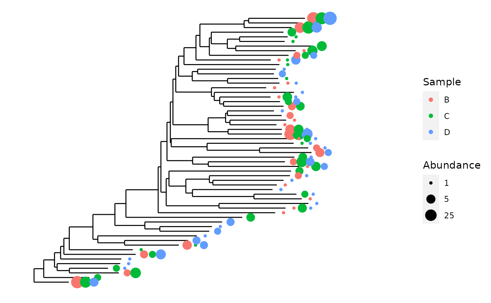

There are many useful examples of phyloseq tree graphics in the
phyloseq online
tutorials. This function is intended to facilitate easy graphical
investigation of the phylogenetic tree, as well as sample data. Note that
for phylogenetic sequencing of samples with large richness, some of the
options in this function will be prohibitively slow to render, or too dense
to be interpretable. A rough ``rule of thumb'' is to use subsets of data
with not many more than 200 OTUs per plot, sometimes less depending on the
complexity of the additional annotations being mapped to the tree. It is
usually possible to create an unreadable, uninterpretable tree with modern
datasets. However, the goal should be toward parameter settings and data
subsets that convey (honestly, accurately) some biologically relevant
feature of the data. One of the goals of the phyloseq-package
is to make the determination of these features/settings as easy as possible.
plot_tree(
physeq,
method = "sampledodge",
nodelabf = NULL,
color = NULL,
shape = NULL,
size = NULL,
min.abundance = Inf,
label.tips = NULL,
text.size = NULL,
sizebase = 5,
base.spacing = 0.02,
ladderize = FALSE,
plot.margin = 0.2,
title = NULL,
treetheme = NULL,
justify = "jagged"
)
Arguments
| physeq |
(Required). The data about which you want to
plot and annotate a phylogenetic tree, in the form of a single instance of
the phyloseq-class, containing at minimum a phylogenetic
tree component (try phy_tree). One of the major advantages
of this function over basic tree-plotting utilities in the
ape-package is the ability to easily annotate the tree with
sample variables and taxonomic information. For these uses, the
physeq argument should also have a sample_data and/or
tax_table component(s). |
| method |
(Optional). Character string. Default "sampledodge".
The name of the annotation method to use. This will be expanded in future
versions. Currently only "sampledodge" and "treeonly" are
supported. The "sampledodge" option results in points drawn next
to leaves if individuals from that taxa were observed, and a separate
point is drawn for each sample. |
| nodelabf |
(Optional). A function. Default NULL.
If NULL, the default, a function will be selected for you based
upon whether or not there are node labels in phy_tree(physeq). For
convenience, the phyloseq package includes two generator functions for
adding arbitrary node labels (can be any character string),
nodeplotdefault; as well as for adding bootstrap values in a
certain range, nodeplotboot. To not have any node labels in
the graphic, set this argument to nodeplotblank. |
| color |
(Optional). Character string. Default NULL.
The name of the variable in physeq to map to point color.
Supported options here also include the reserved special variables of
psmelt. |
| shape |
(Optional). Character string. Default NULL.
The name of the variable in physeq to map to point shape.
Supported options here also include the reserved special variables of
psmelt. |
| size |
(Optional). Character string. Default NULL. The name of
the variable in physeq to map to point size. A special argument
"abundance" is reserved here and scales point size using abundance
in each sample on a log scale. Supported options here also include the
reserved special variables of psmelt. |
| min.abundance |
(Optional). Numeric. The minimum number of individuals
required to label a point with the precise number. Default is Inf,
meaning that no points will have their abundance labeled. If a vector,
only the first element is used. |
| label.tips |
(Optional). Character string. Default is NULL,
indicating that no tip labels will be printed. If "taxa_names",
then the name of the taxa will be added to the tree; either next to the
leaves, or next to the set of points that label the leaves. Alternatively,
if this is one of the rank names (from rank_names(physeq)), then
the identity (if any) for that particular taxonomic rank is printed
instead. |
| text.size |
(Optional). Numeric. Should be positive. The
size parameter used to control the text size of taxa labels. Default is
NULL. If left NULL, this function will automatically
calculate a (hopefully) optimal text size given the vertical constraints
posed by the tree itself. This argument is included in case the
automatically-calculated size is wrong, and you want to change it. Note
that this parameter is only meaningful if label.tips is not
NULL. |
| sizebase |
(Optional). Numeric. Should be positive.
The base of the logarithm used to scale point sizes to graphically
represent abundance of species in a given sample. Default is 5. |
| base.spacing |
(Optional). Numeric. Default is 0.02.
Should be positive. This defines the base-spacing between points at each
tip/leaf in the the tree. The larger this value, the larger the spacing
between points. This is useful if you have problems with overlapping
large points and/or text indicating abundance, for example. Similarly, if
you don't have this problem and want tighter point-spacing, you can shrink
this value. |
| ladderize |
(Optional). Boolean or character string (either
FALSE, TRUE, or "left"). Default is FALSE.
This parameter specifies whether or not to ladderize
the tree (i.e., reorder nodes according to the depth of their enclosed
subtrees) prior to plotting. This tends to make trees more aesthetically
pleasing and legible in a graphical display. When TRUE or
"right", right'' ladderization is used. When set to \code{FALSE}, no ladderization is applied. When set to \code{"left"}, the reverse direction (left'' ladderization) is applied. This argument is
passed on to tree_layout. |
| plot.margin |
(Optional). Numeric. Default is 0.2. Should be
positive. This defines how much right-hand padding to add to the tree
plot, which can be required to not truncate tip labels. The margin value
is specified as a fraction of the overall tree width which is added to the
right side of the plot area. So a value of 0.2 adds twenty percent
extra space to the right-hand side of the plot. |
| title |
(Optional). Default NULL. Character string. The main
title for the graphic. |
| treetheme |
(Optional). A custom ggplot2
theme layer to use for the tree. Supplants any
default theme layers used within the function. A value of NULL
uses a default, minimal-annotations theme. If anything other than a them
or NULL, the current global ggplot2 theme will result. |
| justify |
(Optional). A character string indicating the type of
justification to use on dodged points and tip labels. A value of
"jagged", the default, results in these tip-mapped elements being
spaced as close to the tips as possible without gaps. Currently, any
other value for justify results in a left-justified arrangement of
both labels and points. |
Value
A ggplot2 plot.
Details
This function received an early development contribution from the work of
Gregory Jordan via the ggphylo
package. plot_tree has since been re-written. For details see
tree_layout.
See also
Examples

plot_tree(esophagus, size="abundance", color="samples", base.spacing=0.03)